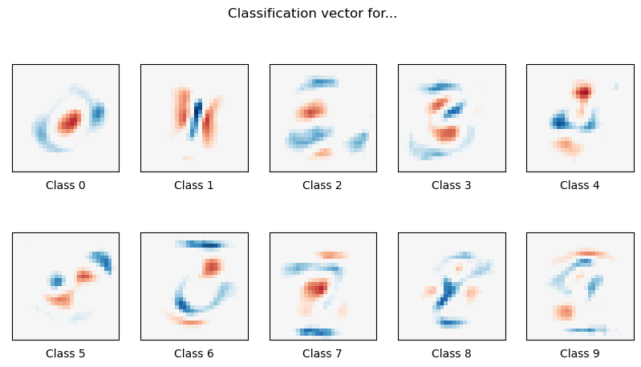

Basic ML example
Here, we reimplement sklearn example as Function Fuse workflow .
The workflow
[1]:
from functionfuse import workflow
from functionfuse.backends.builtin.localback import LocalWorkflow
from functionfuse.storage import storage_factory
@workflow
def openml_dataset():
from sklearn.datasets import fetch_openml
from sklearn.utils import check_random_state
X, y = fetch_openml("mnist_784", version=1, return_X_y=True, as_frame=False, parser="pandas")
random_state = check_random_state(0)
permutation = random_state.permutation(X.shape[0])
X = X[permutation]
y = y[permutation]
X = X.reshape((X.shape[0], -1))
return X, y
@workflow
def train_test_split(X, y, train_samples, test_size):
from sklearn.model_selection import train_test_split
X_train, X_test, y_train, y_test = train_test_split(
X, y, train_size=train_samples, test_size=test_size
)
return {"X_train": X_train, "X_test": X_test, "y_train": y_train, "y_test": y_test}
@workflow
def train_model(X, y):
from sklearn.preprocessing import StandardScaler
from sklearn.pipeline import make_pipeline
from sklearn.linear_model import LogisticRegression
train_samples = len(X)
clf = make_pipeline(StandardScaler(), LogisticRegression(C=50.0 / train_samples, penalty="l1", solver="saga", tol=0.1))
clf.fit(X, y)
return clf
dataset = openml_dataset().set_name("dataset")
X, y = dataset[0], dataset[1]
dataset_split = train_test_split(X, y, train_samples = 5000, test_size = 10000).set_name("dataset_split")
model = train_model(dataset_split["X_train"], dataset_split["y_train"]).set_name("model")
local_workflow = LocalWorkflow(dataset, workflow_name="classifier")
opt = {
"kind": "file",
"options": {
"path": "storage"
}
}
storage = storage_factory(opt)
local_workflow.set_storage(storage)
_ = local_workflow.run()
Model Prediction
The code above is designed to train models and save the workflow data in the storage. Typically this code should be placed in a separate Python module. I placed the workflow code in the Jupyter Notebook for demonstration purposes only. Final model analysis and data visualization are performed from the stored data in the Jupyter Notebook as shown below.
[2]:
import pprint
from functionfuse.storage import storage_factory
the_workflow_name = "classifier"
storage_path = "storage"
opt = {
"kind": "file",
"options": {
"path": storage_path
}
}
storage = storage_factory(opt)
all_tasks = storage.list_tasks(workflow_name=the_workflow_name, pattern="*")
pp = pprint.PrettyPrinter(width=141, compact=True)
print("All graph node names: ")
pp.pprint(all_tasks)
All graph node names:
['dataset', 'dataset_split', 'model']
[3]:
import numpy as np
import matplotlib.pyplot as plt
clf = storage.read_task(workflow_name=the_workflow_name, task_name="model")
dataset_split = storage.read_task(workflow_name=the_workflow_name, task_name="dataset_split")
X_test, y_test = dataset_split["X_test"], dataset_split["y_test"]
lr = clf.named_steps["logisticregression"]
sparsity = np.mean(lr.coef_ == 0) * 100
score = clf.score(X_test, y_test)
# print('Best C % .4f' % clf.C_)
print("Sparsity with L1 penalty: %.2f%%" % sparsity)
print("Test score with L1 penalty: %.4f" % score)
coef = lr.coef_.copy()
plt.figure(figsize=(10, 5))
scale = np.abs(coef).max()
for i in range(10):
l1_plot = plt.subplot(2, 5, i + 1)
l1_plot.imshow(
coef[i].reshape(28, 28),
interpolation="nearest",
cmap=plt.cm.RdBu,
vmin=-scale,
vmax=scale,
)
l1_plot.set_xticks(())
l1_plot.set_yticks(())
l1_plot.set_xlabel("Class %i" % i)
plt.suptitle("Classification vector for...")
Sparsity with L1 penalty: 76.73%
Test score with L1 penalty: 0.8228
[3]:
Text(0.5, 0.98, 'Classification vector for...')
